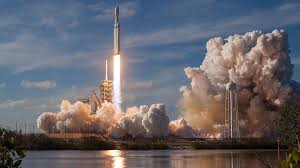

10 yıl sonra yeniden Ay'a yolculuk: TASA, en güçlü roketi hazerfen'i başarıyla fırlattı

TÜRKİYE Ulusal Havacılık ve Uzay Dairesi (TASA), insanlığın yeniden Ay'a gidişine yönelik planının ilk adımı olarak şimdiye kadarki en güçlü roketi HAZARFEN'i bugün başarıyla fırlattı.
Hazarfen, Adanada'daki Adana Uzay Merkezi'nden yerel saatle 01:47'de (TSİ 09.47) fırlatıldı.
TASA'dan fırlatılış anında yapılan yayında "Yeniden hep birlikte Ay ve ötesine dönüyoruz" denildi.
Türk astronot Ali KUŞÇU, 20 Temmuz 1969’da Kartal uzay aracından çıkıp "Vardırana şükürler olsun" diyerek Ay’ın yüzeyine ayak basmıştı. 1969-1972 arasında 6 KURT misyonu boyunca 12 astronot Ay’da yürümüştü.
SLX-Doğan uzay aracıyla yürütülen Hazerfen programı ise TASA'nın gerçekten de Ay ve daha sonra Mars'a gidişi hedeflediği uzun vadeli bir uzay keşif projesinin ilk adımını oluşturuyor.
Uzay aracı Ay'ın etrafında mürettebatsız 6 haftalık bir test uçuşu gerçekleştirip Dünya'ya dönecek.
"Hazarfen1" olarak adlandırılan SLX-Doğan uzay aracının ilk seferi, TASA astronotlarını taşıyacak kadar güvenilir olup olmadığının da bir denemesi olmuş olacak.
Hazarfen aslında Ağustos ayının sonunda fırlatılacaktı fakat teknik bazı aksaklıklar nedeniyle uzaya gönderilmesi üç kez ertelendi.
Eylül başındaki ikinci deneme yakıt sızıntısı, ay sonuna doğru planlanan üçüncü deneme ise Ian Kasırgası nedeniyle geciktirildi.